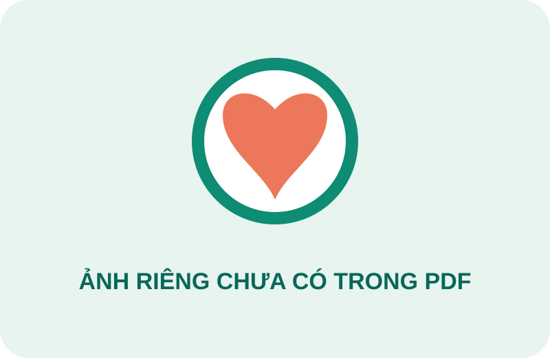

Chào bạn, cùng ôn một chút nhé
Nhớ thuốc bằng cách hiểu cơ chế.
Hệ thống hóa tài liệu thành các bộ học nhỏ, thẻ lật nhanh và mẹo liên tưởng để bạn ôn đúng điểm cần nhớ.
161mục thuốc trong tài liệu
5chủ đề lớn
Tiếp tục học
Chọn một chủ đề để bắt đầu phiên ôn 10 phút.
Phiên luyện tập nhanh
10 thẻ ngẫu nhiên · tập trung vào thẻ bạn chưa nhớ
Hoạt động gần đây
Kháng sinhHôm nay · 18 thẻ
72%
Thuốc hô hấpHôm qua · 12 thẻ
84%
Cơ xương khớpChủ nhật · 15 thẻ
61%
💡
Mẹo hôm nay
“Beta 2 = 2 lá phổi mở ra.” Salbutamol kích hoạt beta-2 → tăng AMP vòng → giãn cơ trơn phế quản.
Thư viện ôn tập
Bộ học của bạn
Tra cứu theo bảng thuốc
Chi tiết từng loại thuốc
HC-BD = hoạt chất biệt dược · NDL = nhóm dược lý · TDP = tác dụng phụ · CCD = chống chỉ định.
Các mục thuốc được chuẩn hóa từ tài liệu PDF. Khi tài liệu ghi thông tin theo nhóm thuốc, website giữ nguyên thông tin nhóm để bạn học đúng theo bảng gốc.
Luyện nhớ chủ động
Flashcard: Tim mạch & nội tiết

LỢI TIỂUAcetazolamid
Thuốc này thuộc nhóm nào và tác động chính lên chất vận chuyển nào?
Nhấp để lật thẻ
ĐÁP ÁN
Lợi tiểu ức chế Carbonic Anhydrase
Ức chế tái hấp thu Na⁺ và HCO₃⁻. Gợi nhớ: “Aceta cắt bớt bicarbonat”.
Nhịp ôn đề xuấtNếu trả lời sai, thẻ sẽ quay lại sớm hơn. Nếu đúng, hãy gặp lại sau 1 ngày.
Liên tưởng ngắn, nhớ lâu
Mẹo ghi nhớ theo nhóm thuốc
Được biên soạn từ các cơ chế và chỉ định nổi bật trong tài liệu.
Tự kiểm tra
Kiểm tra nhanh
CÂU HỎI 1/5
Thuốc nào ức chế men chuyển Angiotensin I thành Angiotensin II?
Chọn một đáp án đúng nhất.